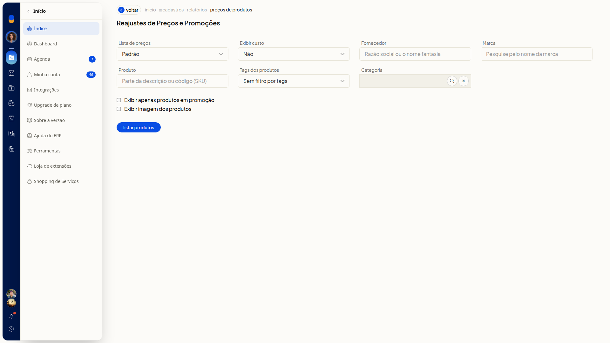
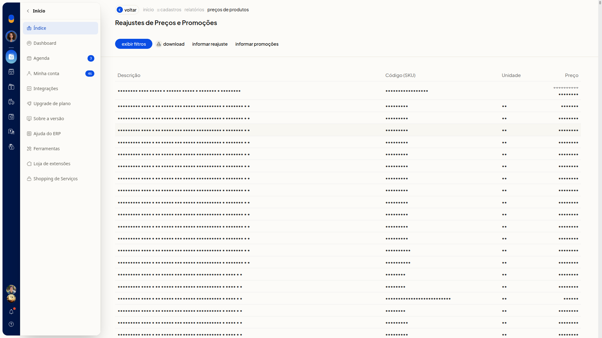

Baixar a listagem de preços dos produtos
No ERP da Olist, você baixa a listagem de preços dos produtos da lista escolhida, a partir de Cadastros > Produtos. Dá para filtrar os produtos e escolher a lista de preços antes de baixar.
Instruções
-
Acesse Cadastros > Produtos.

-
Clique em Mais ações.

-
Clique em Reajustar preço dos produtos.

-
Ajuste os filtros que precisar.
Lista de preços e custo
- Lista de preços: não é obrigatório. Selecione uma lista já cadastrada. A opção inicial é Padrão. Há outras listas cadastradas na conta.
- Exibir custo: não é obrigatório. Escolha Não, Custo da compra ou Custo médio. A opção inicial é Não.
Filtros do cadastro
- Fornecedor: não é obrigatório. Busque um fornecedor já cadastrado. Se o nome não existir, a tela indica que o cadastro não foi encontrado.
- Marca: não é obrigatório. Busque uma marca já cadastrada. Se o nome não existir, a tela indica que a marca não foi encontrada.
- Produto: não é obrigatório. Preencha se quiser filtrar por um produto.
- Tags dos produtos: não é obrigatório. Selecione tags já cadastradas. Para não filtrar por tags, use Sem filtro por tags.
- Categoria: não é obrigatório. Busque uma categoria já cadastrada e limpe a busca se precisar. O texto livre não permanece no campo.
Opções de exibição
- Exibir apenas produtos em promoção: não é obrigatório. Marque para listar somente produtos em promoção.
- Exibir imagem dos produtos: não é obrigatório. Marque para exibir a imagem dos produtos.

-
Clique em Listar produtos e aguarde a geração da listagem. A tabela mostra Descrição, Código (SKU), Unidade e Preço.

-
Clique em Download para baixar a listagem.
Informações adicionais
A listagem pode ser gerada de novo
Clique em Exibir filtros para mostrar os filtros outra vez. Ajuste o que precisar, clique em Listar produtos e, em seguida, em Download.